01
Concept
From recognisable photographs toward abstract signs, following the world of Tlön replacing reality.

07
Motion piece and 9 Panels
Overview
Grain, texture and surface, animated, and set beside a nine-panel grid of Aaron Siskind's photographs and selected text.
BriefRender the invisible visible: dust, grain and surface as motion, and the same world as a printed sequence of nine panels.
ApproachLayers of texture are animated for atmospheric depth. In 9 Panels, each panel stands alone and reads as one beat in the sequence, moving from recognisable photographs toward abstract signs.
7 steps
From recognisable photographs toward abstract signs, following the world of Tlön replacing reality.
Aaron Siskind's photographs, sorted from real to abstract.

Figures and textures cut out of Siskind's prints.
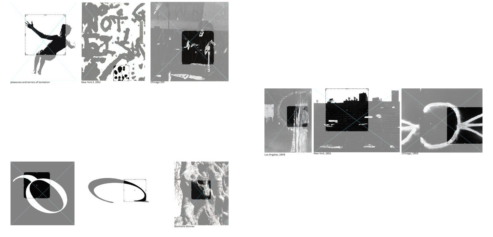
Bodoni, Garamond and Baskerville compared for the panel text.
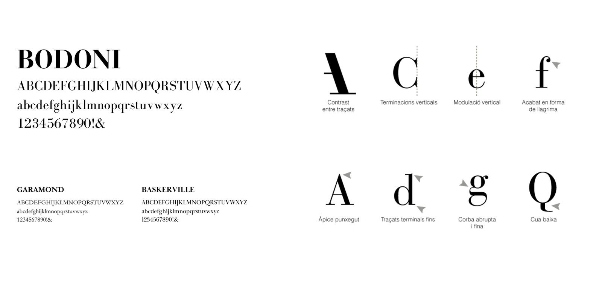
Grid variations in Illustrator before the final nine panels.
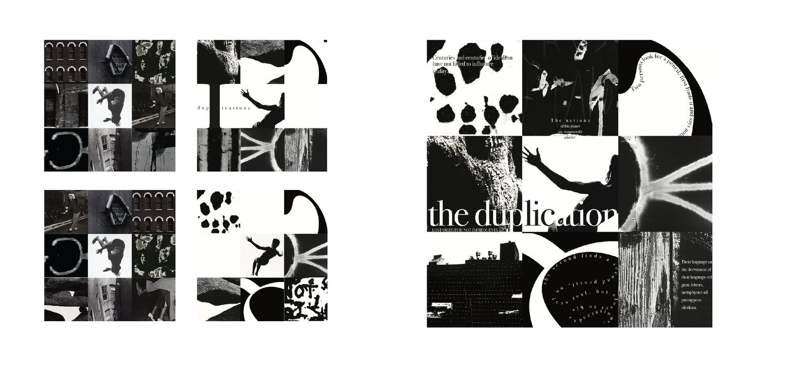
Set to “Aveline” by Mountain Dust, 2016.
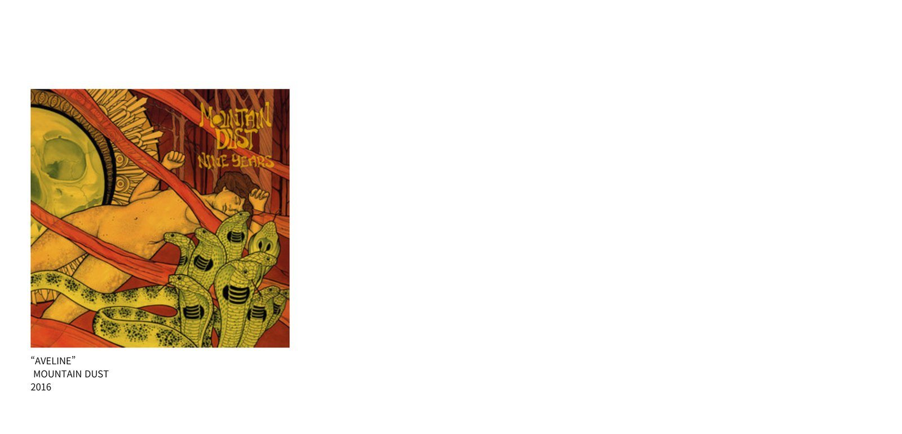
Key frames from the After Effects timeline.
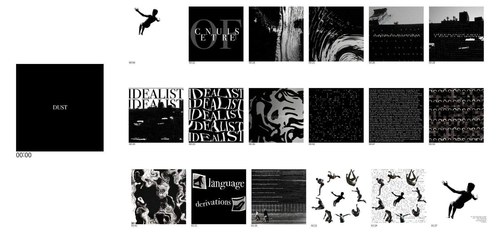

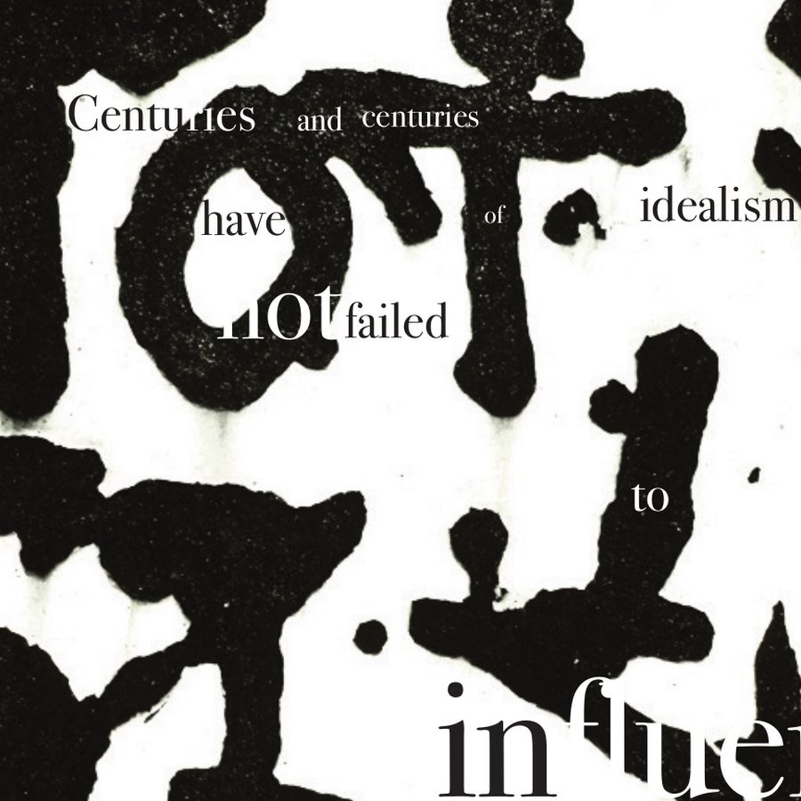

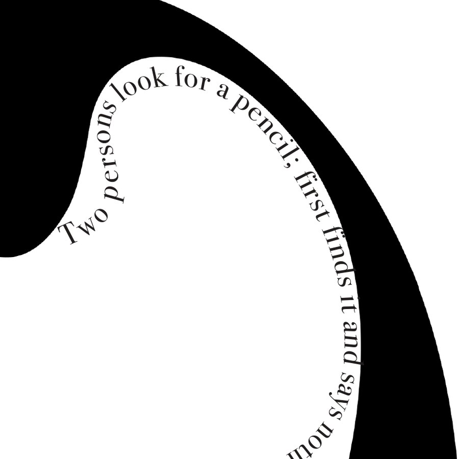
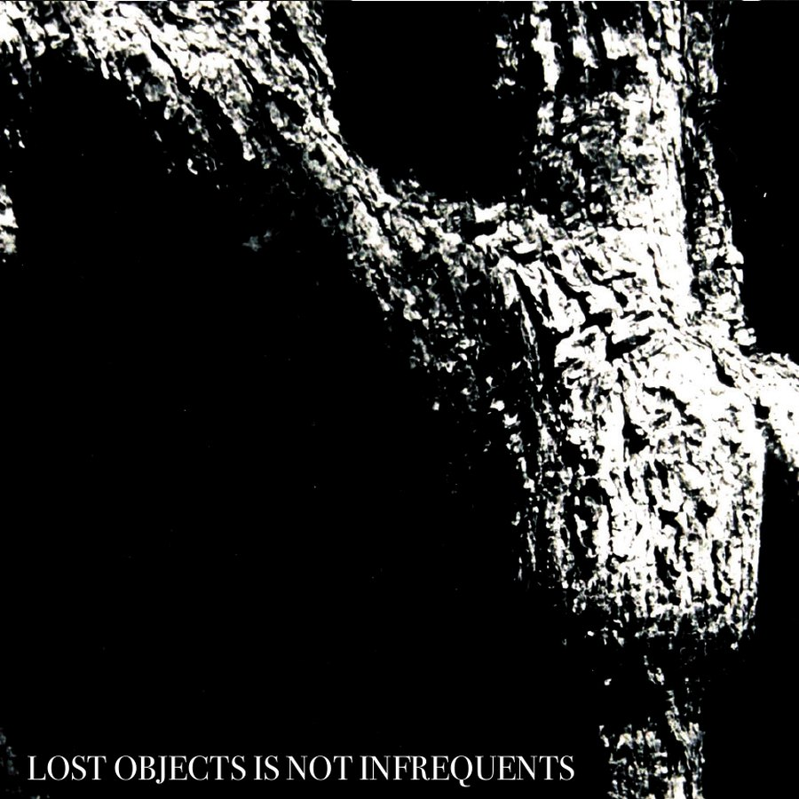
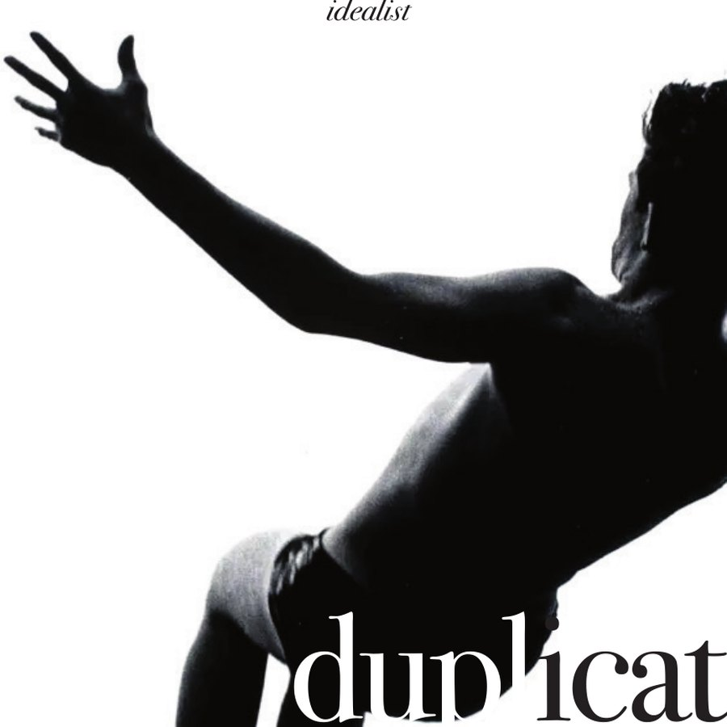
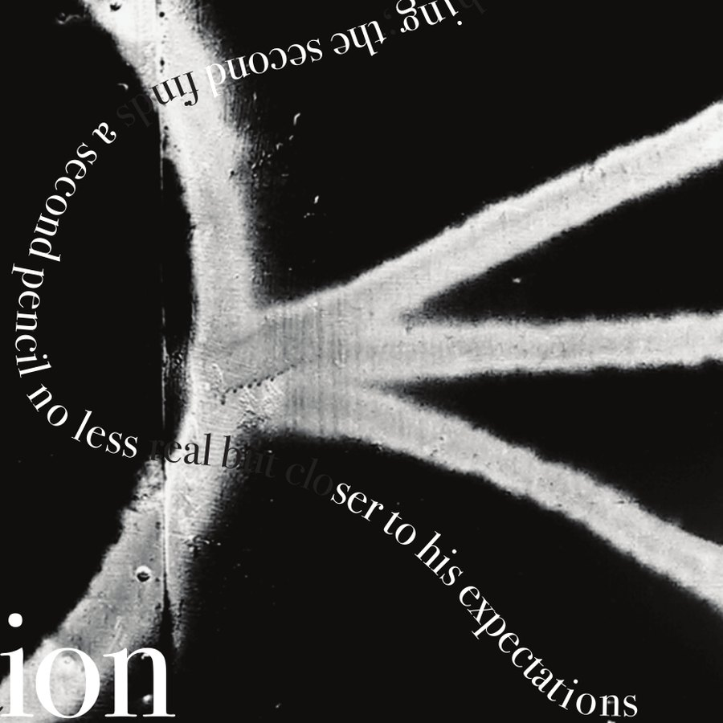
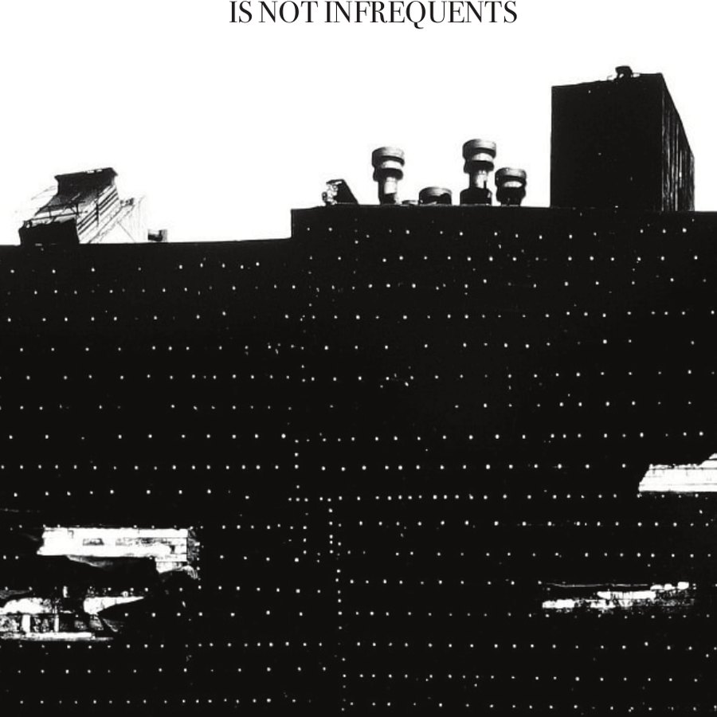

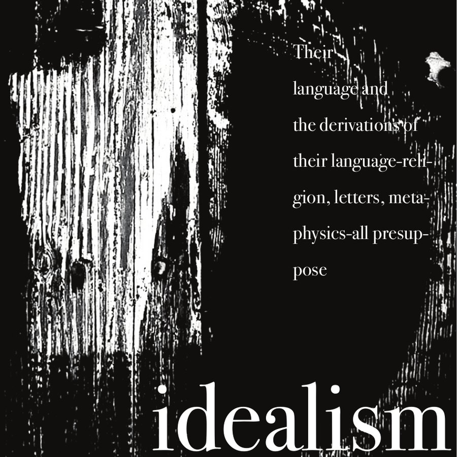